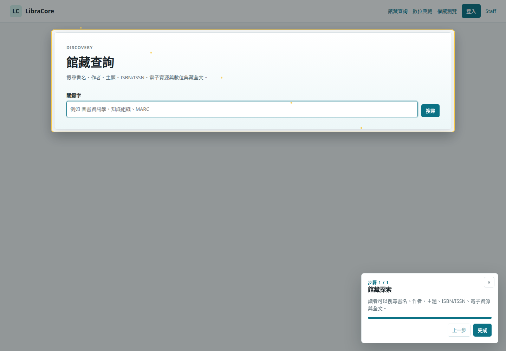
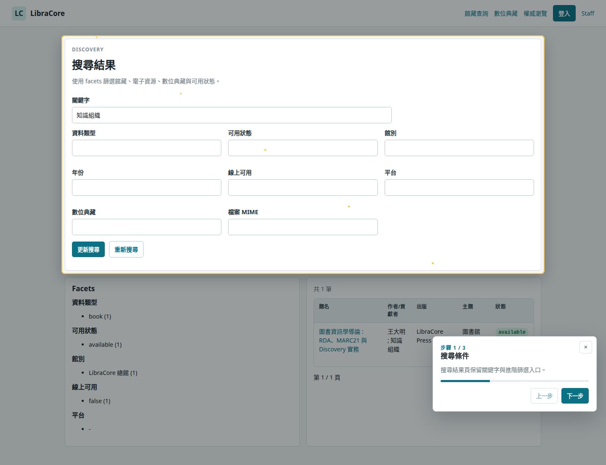
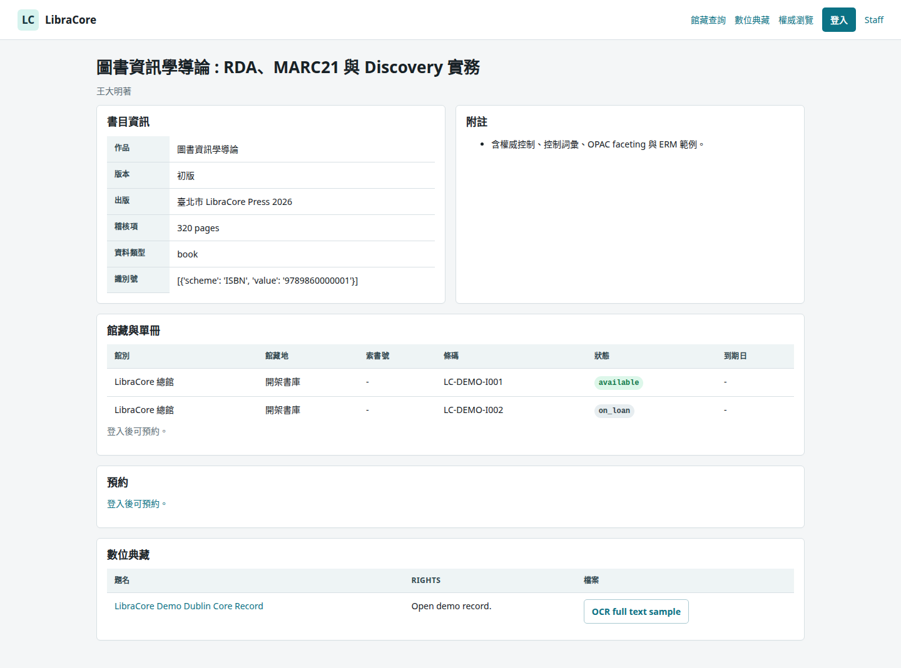
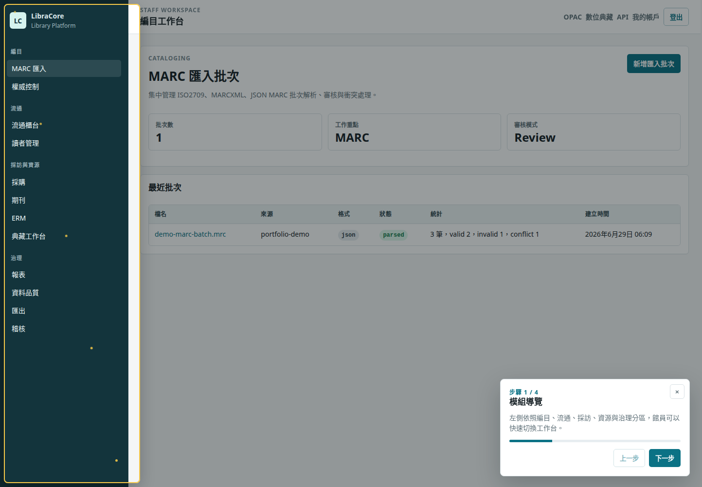
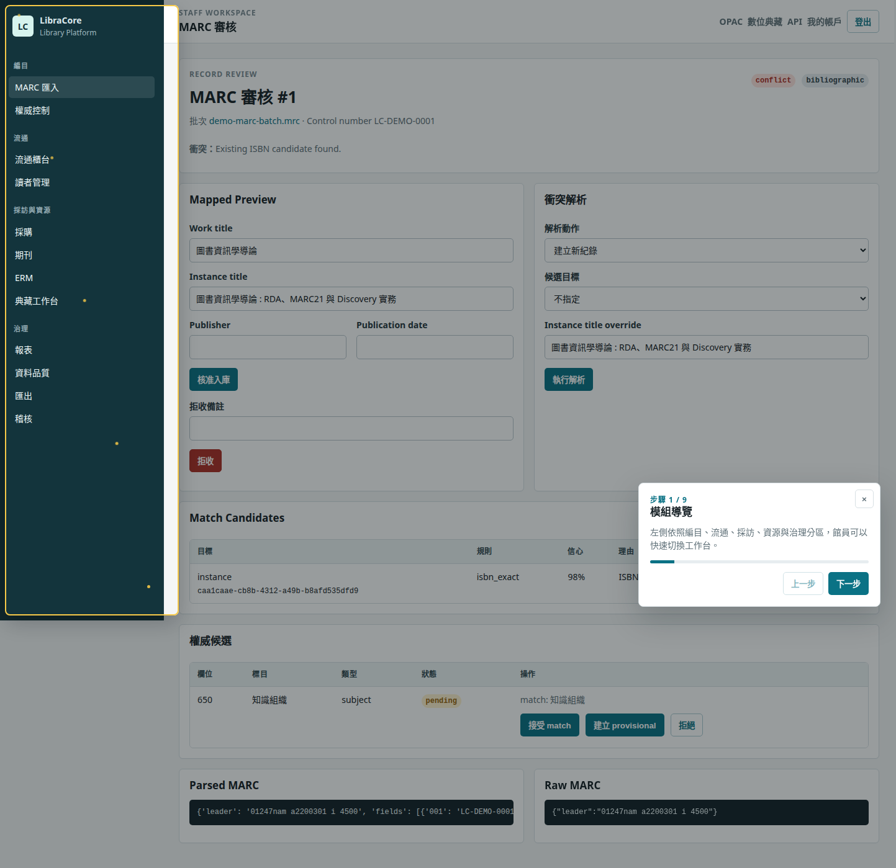
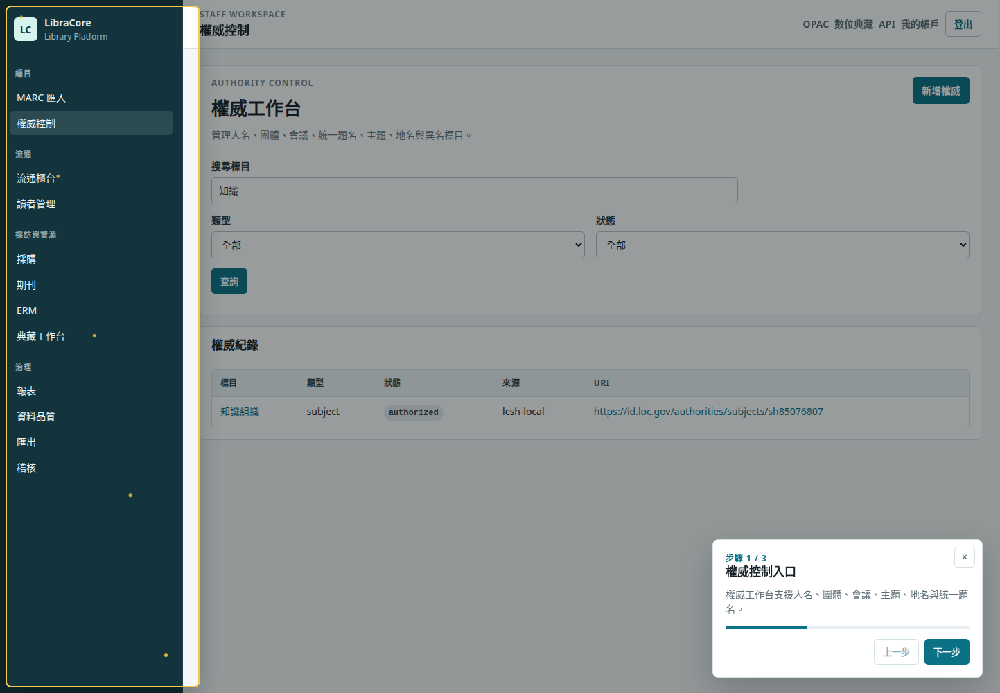
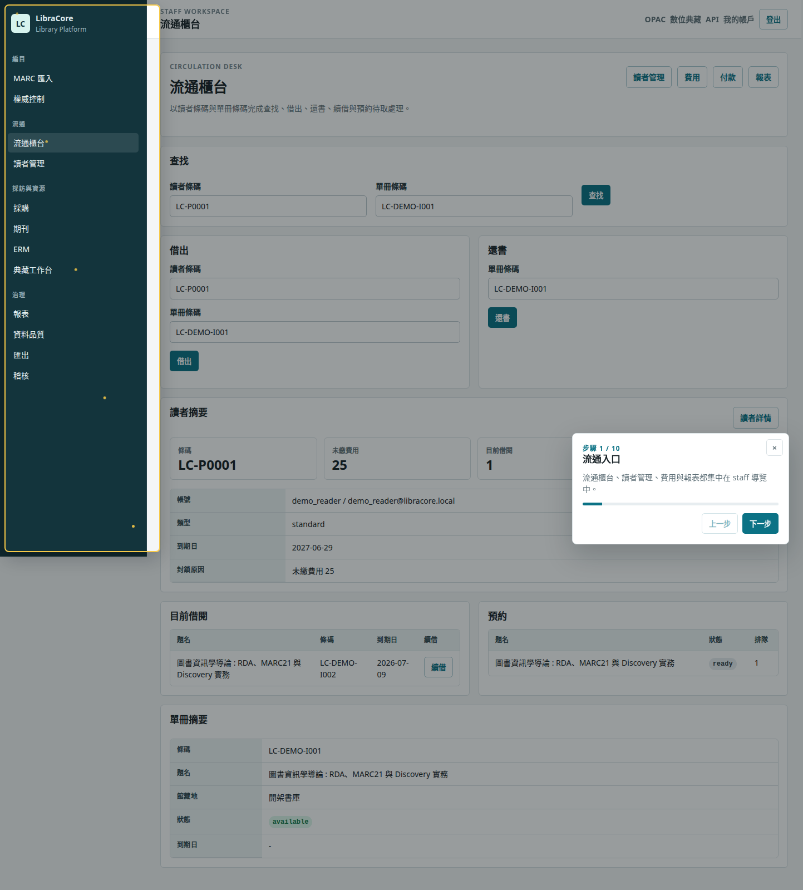
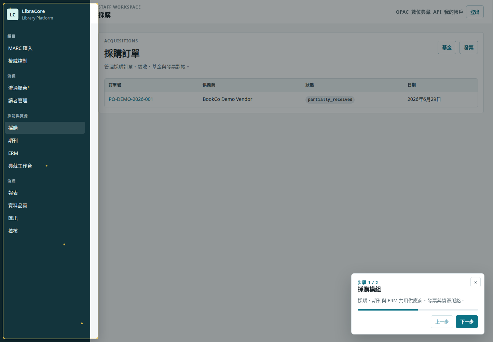
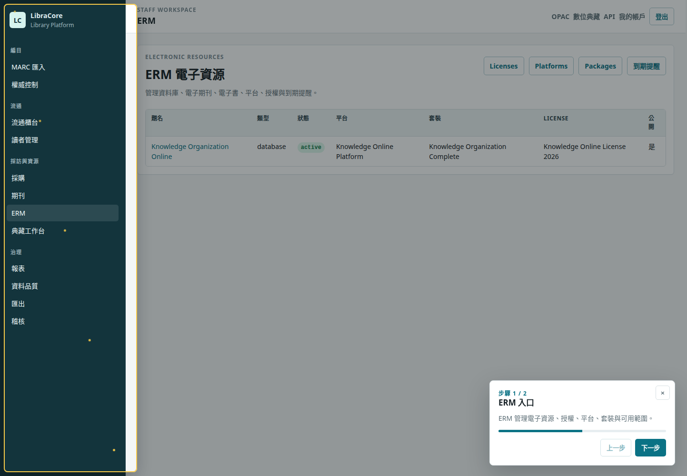
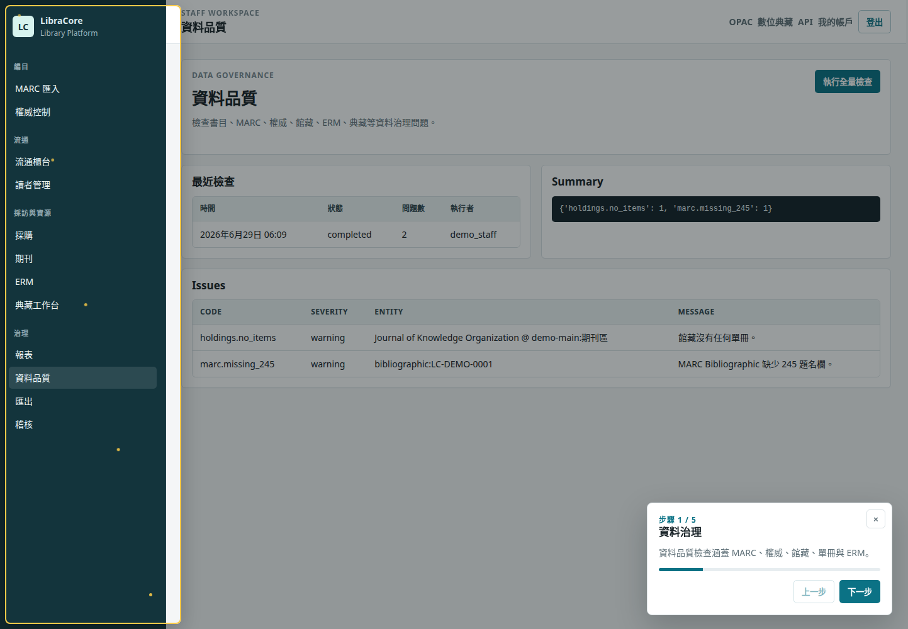

Library Services Platform
LibraCore
A Django-based integrated library information system demo covering MARC21, RDA-oriented cataloging, authority control, OPAC discovery, circulation, acquisitions, serials, ERM, repository, analytics, audit, and guided staff workflows.
Guided Walkthrough
小幫手導覽錄影
The recording shows LibraCore's guided tour overlay, spotlight, particles, and staff/public workflows.
Media Gallery
Demo screenshots
Captured automatically with Playwright from seeded portfolio data.









